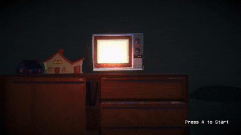
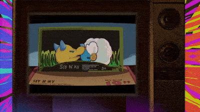
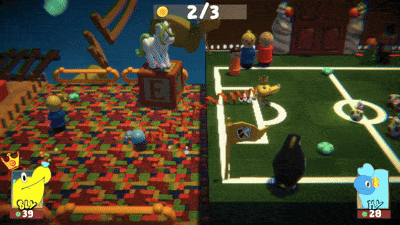
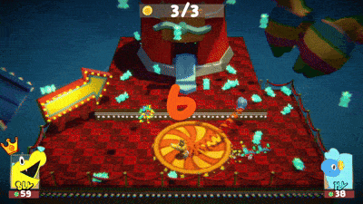

Aperçu du projet
Sly n' Ky : Jouet 2 en 1 est un platformeur 3D coopératif où chaque joueur incarne une des deux extrémités d'un jouet relié par un slinky. Les joueurs doivent progresser à travers les deu niveaux tout en apprenant à surmonter la contrainte du slinky, mais aussi en l'utilisant comme avantage. Ce slinky limite la distance entre les deux joueurs, mais il peut également leur servir de ressort et d'élastique pour se propulser mutuellement afin d'atteindre des hauteurs autrement inaccessibles. . Selon les règles du concours, le projet devait être jouable à au moins du joueurs et utiliser uniquement la croix directionnelle ainsi que deux boutons principaux de la manette, dans le même esprit que des jeux des années 80 et 90. Dans Sly n Ky,
Bande-Annonce de sortie
GIFs du jeu




Mon rôle dans le projet
En tant que designer sur le projet avec beaucoup d'expérience avec Unity et en C#, j'ai surtout travaillé sur la conception de l'idée de base, la proposition de ces dites idées, ainsi que la planification des mécaniques liées au slinky. Une fois la phase de conception terminée, je suis passé au design de niveau ainsi qu'à la programmation additionnelle, entre autres d'aspects liés à ceux-ci.